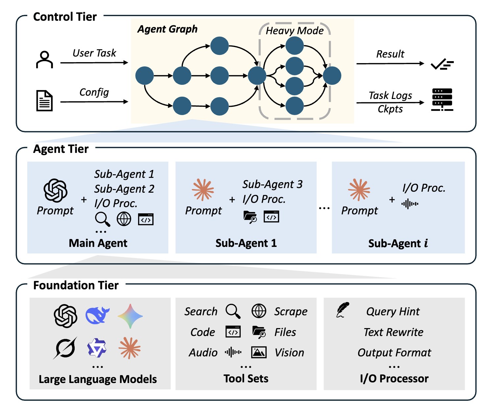

What's New in MiroFlow v1.7
MiroFlow v1.7 is a major architectural upgrade over the original open-source release. This page summarizes the key new features and improvements.

Skill System
Define new agent skills with Markdown — no code required.
In the original MiroFlow, there was no concept of reusable skills. Agents relied entirely on their system prompt and available tools. In v1.7, we introduce a Skill System that lets you define task-specific instructions as SKILL.md files with YAML frontmatter.
Example: CSV File Analysis Skill
Key capabilities:
- Auto-discovery: Skills are automatically found by scanning configured directories
- Sandboxed execution: Python skills run in isolated environments for safety
- Production whitelisting: Restrict available skills via
allowed_skill_ids - MCP integration: Skills are exposed as callable tools through the Skill MCP Server
Agent Graph Orchestration
From flat main/sub-agent to composable multi-agent graphs.
The original MiroFlow had a flat two-level structure: one main agent and optional sub-agents. In v1.7, agents can be composed into hierarchical graphs with arbitrary depth.
How it works
- Agents are defined in YAML config with
sub_agentsreferences - Sub-agents are exposed to parent agents as callable tools
- Each level can have its own LLM, tools, and prompt configuration
AgentContextcarries shared state between agents
main_agent:
type: IterativeAgentWithTool
llm:
provider_class: GPT5OpenAIClient
model_name: gpt-5
sub_agents:
agent-worker: ${agent-subagent-1}
agent-subagent-1:
type: IterativeAgentWithTool
sub_agents:
agent-worker: ${agent-subagent-3} # Nested sub-agents
agent-subagent-3:
type: IterativeAgentWithTool
tools:
- config/tool/tool-code-sandbox.yaml
- config/tool/tool-serper-search.yaml
Additionally, the new SequentialAgent enables composing multiple modules in sequence with shared context — used for building input/output processing pipelines and multi-step workflows.
Web Application
Out-of-the-box interactive web interface.
The original MiroFlow was CLI-only. v1.7 ships with a full-featured FastAPI + React web application.
Web App Features
- Session management: Create and manage multiple agent sessions
- Task execution & monitoring: Submit tasks and watch agent progress in real-time
- File uploads: Attach files for the agent to analyze
- REST API: Programmatic access to all agent capabilities
Smart Rollback & Retry
Automatic detection and recovery from LLM output errors.
The original MiroFlow had basic retry logic. v1.7 introduces a sophisticated rollback mechanism that detects and handles:
| Error Type | Detection | Recovery |
|---|---|---|
| Format errors | Malformed tool calls, invalid JSON | Roll back and retry with error feedback |
| Truncated output | Incomplete responses from token limits | Roll back and retry with context |
| Refusals | LLM refuses to complete the task | Roll back and retry with adjusted prompt |
| Duplicate tool calls | Repeated identical invocations | Roll back and break the loop |
Configurable parameters:
max_consecutive_rollbacks: Stop after N consecutive failures (default: 5)max_duplicate_rollbacks: Stop after N duplicate tool calls (default: 3)
Each rollback includes accumulated failure feedback, giving the LLM context about what went wrong in previous attempts.
Plugin Architecture (Component Registry)
Extend MiroFlow without touching core code.
The original MiroFlow used hardcoded importlib lookups to find provider classes. v1.7 introduces a unified registry with decorator-based registration.
from miroflow.registry import register, ComponentType
@register(ComponentType.AGENT, "MyCustomAgent")
class MyCustomAgent(BaseAgent):
async def run_internal(self, ctx: AgentContext) -> AgentContext:
# Your custom logic
return ctx
Then reference it in config:
Three component types supported:
ComponentType.AGENT— Custom agent implementationsComponentType.IO_PROCESSOR— Input/output pipeline stagesComponentType.LLM— New LLM provider integrations
The registry uses thread-safe lazy loading — modules are only imported when first requested.
Zero-Code Prompt Management
Tune agent behavior by editing YAML, not Python.
The original MiroFlow used a Python class hierarchy for prompts (BaseAgentPrompt → MainAgentPrompt_GAIA, etc.). Changing prompts required code changes and redeployment.
v1.7 introduces a YAML + Jinja2 template system:
template:
initial_user_text:
components:
- task_description
- task_guidance
- file_input_prompt
task_description: |
{{ task_description }}
file_input_prompt: |
{% if file_input is defined and file_input is not none %}
A {{ file_input.file_type }} file '{{ file_input.file_name }}'
is associated with this task.
{% endif %}
The PromptManager renders templates at runtime with context variables, supporting conditionals, loops, and template composition.
Modular IO Processing Pipeline
Composable input/output processors with clean separation of concerns.
The original MiroFlow mixed IO processing logic into the monolithic Orchestrator class. v1.7 extracts this into a dedicated io_processor module with 9 composable processors:
Input Processors:
FileContentPreprocessor— Pre-processes attached file contentInputHintGenerator— Generates task hints using an LLMInputMessageGenerator— Formats the initial message for the agent
Output Processors:
SummaryGenerator— Summarizes the agent's conversationRegexBoxedExtractor— Extracts\boxed{}answers via regexFinalAnswerExtractor— Extracts final answers using an LLMExceedMaxTurnSummaryGenerator— Handles max-turn failure gracefully
Processors are configured in YAML and executed by SequentialAgent:
input_processor:
- ${input-message-generator}
output_processor:
- ${output-summary}
- ${output-boxed-extractor}
Expanded Benchmark Support
v1.7 adds support for more benchmarks with dedicated verifiers:
| Benchmark | Status |
|---|---|
| FutureX | Supported |
| GAIA (Validation + Test) | Supported |
| HLE / HLE Text-Only | Supported |
| BrowseComp (EN + ZH) | Supported |
| xBench-DeepSearch | Supported |
| WebWalkerQA | New in v1.7 |
| SimpleQA | New in v1.7 |
| FinSearchComp | New in v1.7 |
| FRAMES-Test | New in v1.7 |
Each benchmark has a dedicated verifier implementation for automated result evaluation, with support for batch evaluation and score aggregation.
With standardized evaluation infrastructure, MiroFlow also enables fair cross-model comparison — see the Model Comparison Leaderboard for details.
Summary: Old vs New
| Feature | Original MiroFlow | MiroFlow v1.7 |
|---|---|---|
| Agent architecture | Monolithic Orchestrator |
Modular BaseAgent hierarchy |
| Multi-agent | Flat main + sub-agent | Hierarchical agent graphs |
| Skill system | None | SKILL.md with auto-discovery |
| Web interface | CLI only | FastAPI + React |
| Error recovery | Basic retry | Smart rollback with feedback |
| Component discovery | Hardcoded importlib | Unified registry with @register |
| Prompt management | Python class hierarchy | YAML + Jinja2 templates |
| IO processing | Mixed into orchestrator | Composable processor pipeline |
| Python support | >= 3.12 | >= 3.11, < 3.14 |
Documentation Info
Last Updated: March 2026 · Doc Contributor: Team @ MiroMind AI